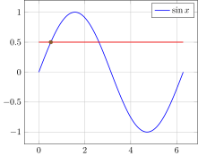
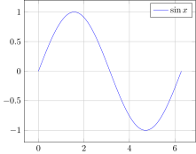
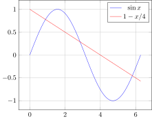
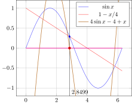
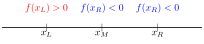

Turn engineering problems into mathematical problems
Turn mathematical problems into computational problems
Tell a computer how to solve the computational problems
Using numerical methods
Developing numerical methods
Root-finding
Main idea: Solve \(f(x)=0\).
Recall mathematical terminology:
A root of a function \(f(x)\) is a value of \(x\) at which \(f(x) = 0\).
A function is a unique mapping (or ‘formula’) that assigns a unique value of \(f(x)\) for any given value of \(x\).
The inverse mapping is not necessarily unique; two values of \(x\) can have the same value of \(f(x)\).
Roots vs. solutions: The root of \(f(x)\) is the solution to the equation\(f(x) = 0\)
Finding Roots analytically
i.e., using mathematical analysis.
Q. Find the root(s) of \(f(x) = x^2+x-6\)
\(f(x) = x^2 +3x - 2x - 6\)
\(= (x + 3)(x-2)\)
This equals zero when \(x = -3\) or \(x=2\)
The roots of \(x^2 + 3x - 2x - 6\) are \(\boxed{x=-3}\) and \(\boxed{x=2}\).
When analytical root-finding fails
Mathematical analysis can sometimes fail us engineers, even for very simple equations. For example, the equation
\[\frac{x}{2}-1 = \sin x\]
is difficult to solve exactly
Graphical Techniques
for solving \(\sin x = 0.5\)

Graphical Techniques for more functions
Find a root of the function \[f(x) = 4 \sin x - 4 + x\]



Graphical Solution of equations
Find the solutions to the following equations using the provided paper:
\(\sin x = 0.7\)
\(\sin x = 0.72\)
\(\sin x - 0.7x = 0\)
\(2 (\sin x + 1) = 0\)
\(\sin x - x^2 + 1 = 0\)
Finding Roots with a computer
We want to find a root for \[f(x) = x^3 - 10x^2 + 5.\]
Options:
Try out many different values of \(x\) indiscriminately.
Try out many different values of \(x\)systematically (in order)
Try out many different values of \(x\)adaptively — learn from each try
An Incremental Search Algorithm for \(f(x) = x^3 - 10x^2 + 5\)
Let’s select a \(\Delta x\) with which to search for solutions. Say, \(\Delta x = 0.1\)
Start from \(x=0\) and move up in increments of \(\Delta x\)
The value of \(x\) for which \(f(x) \approx 0\) will be our root!
Write a Python script to print the value of \(f(x)\) for \(x=0, 0.1, 0.2, ..., 1.0\)
import numpy as npdef f1(x):return x**3-10* x**2+5x = np.linspace(0,1,11)for value in x:print(f"At x = {value:.3f}, f(x) = {f1(value):.3f}")
Vectorized code
To apply the function f1 to the array x, we can also do f1(x) directly
Identifying the value closest to zero
min vs. argmin
The numpy function min finds the minimum value of an array.
The numpy function argmin finds the index of the minimum value of an array.
Recall that abs() in Python means ‘absolute value of’
import numpy as npdef f1(x):return x**3-10* x**2+5# Array of x-values 0, 0.1, 0.2, ..., 1.0x = np.linspace(0,1,11)# Array of f(x) values f(0), f(0.1), ..., f(1.0)y = f1(x)# Index of f(x) closest to zeroloczero = np.argmin(abs(y))# Locate that value of xanswer = x[loczero]print("Our best estimate of the root of f(x) is")print(f"x = {answer:.1f}")
A better approach …
Let’s look closely at the result of our incremental search.
import numpy as npdef f1(x):return x**3-10* x**2+5x = np.linspace(0,1,11)for value in x:print(f"At x = {value:.3f}, f(x) = {f1(value):.3f}")
At x =0.000, f(x) =5.000At x =0.100, f(x) =4.901At x =0.200, f(x) =4.608At x =0.300, f(x) =4.127At x =0.400, f(x) =3.464At x =0.500, f(x) =2.625At x =0.600, f(x) =1.616At x =0.700, f(x) =0.443At x =0.800, f(x) =-0.888At x =0.900, f(x) =-2.371At x =1.000, f(x) =-4.000
Idea:
Sign change in \(f(x)\) occurs at root of \(f(x)\)
numpy has a function sign()
Bisection Algorithm for \(f(x) = x^3 - 10x^2 + 5\)
The bisection algorithm works by successively bisecting a search space to determine where a sign change in \(f(x)\) occurs.
...At x =0.600, f(x) =1.616At x =0.700, f(x) =0.443At x =0.800, f(x) =-0.888At x =0.900, f(x) =-2.371...
We know that \(f(x) = 0\) occurs for \(\boxed{0.7 < x < 0.8}\)
Use Python/Numpy to find out whether the root is in the left half of the given interval or its right half.
We have learned that \(f(x)\) changes sign between \(x = 0.7\) and \(x=0.75\).
Conclude that the root is located in the range \(\boxed{0.7 < x < 0.75}\)

Introducing the idea of ‘tolerance’
In numerical methods, the word ‘tolerance’ is used to denote the window within which you know a desired value.
We first learned that \(f(x)=0\) somewhere in the range \(x \in (0.7, 0.8)\). The root is known with a tolerance of 0.1.
Next, we saw that \(f(x)=0\) somewhere in the range \(x \in (0.7, 0.75)\). The root is now known with a tolerance of 0.05.
The smaller the tolerance, the better your knowledge.
Reducing tolerance
A numerical method usually has a target tolerance. “Good enough!”
Cannot reduce tolerance indefinitely — floating-point precision limitations such as machine epsilon / gap size eventually crop up
64-bit floats — good enough for engineering satisfaction but not good enough for mathematical satisfaction.
While loops and tolerance
A typical way to write numerical methods is to enclose one’s algorithm within a block such as while something > target_tolerance
Keeps running as long as target tolerance is not reached
Terminates once target tolerance is reached.
An algorithm for bisection
Write a Python program that performs bisection three times
At the end of this process, we know that the root is located somewhere in the interval \[x \in \boxed{(0.725, 0.7375)}\]
We can choose to state this as \(x_{\text{root}} = 0.73125 \pm 0.00625\)
Convergence rates
At each subsequent bisection step, the bisection window is halved.